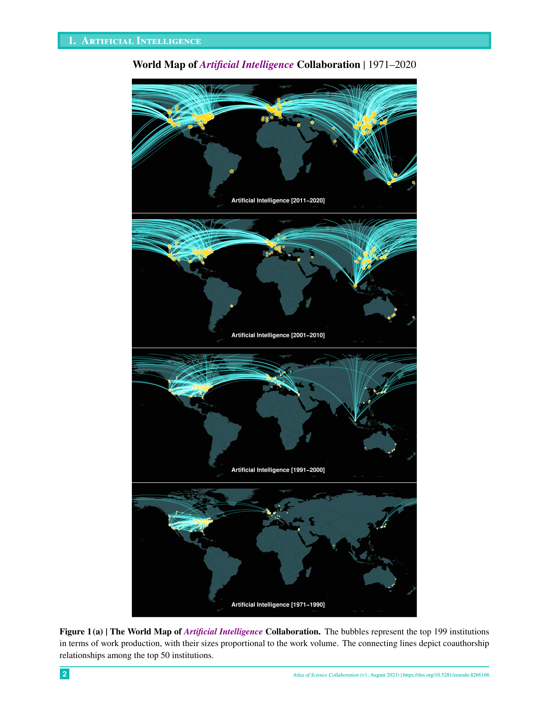

저자: Keisuke Okamura | 날짜: 2024-06-11 | Journal: SN Computer Science | DOI: 10.1007/s42979-024-02973-4" target="_blank">10.1007/s42979-024-02973-4

Figure 1
1971년부터 2020년까지 50년간 자연과학 15개 분야에서 기관 간 연구 협력은 어떻게 진화했는가? OpenAlex 오픈 데이터를 기반으로 공저 관계를 분석하여 세계 지도와 다이어그램으로 시각화한 협력 지도책(atlas)을 제시한다. 주요 과학 생산국과 그 협력 관계의 변화, 분야별 국제·기관 간 협력의 현황을 한눈에 파악할 수 있도록 설계된 실용 참고 자료로, 과학 정책 입안자, 외교관, 기관 연구부서를 주요 독자로 한다.
Figure 1
Figure 1: Atlas의 샘플 시각화 - 특정 분야(예: 인공지능)에서 상위 기관 간 공저 협력 네트워크를 세계 지도 및 표 형태로 표현
총평: 50년간 15개 자연과학 분야의 기관 간 협력을 오픈 데이터로 시각화한 실용적 참고 자료다. 새로운 방법론적 기여보다는 정책 입안자·외교관·기관 연구부서에 즉시 활용 가능한 시각 정보 제공이 핵심 가치다.